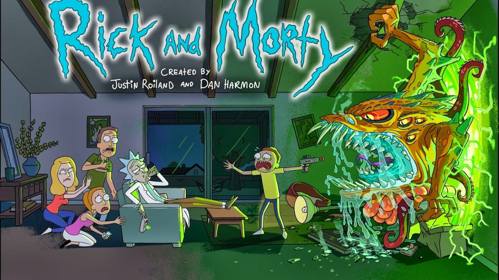
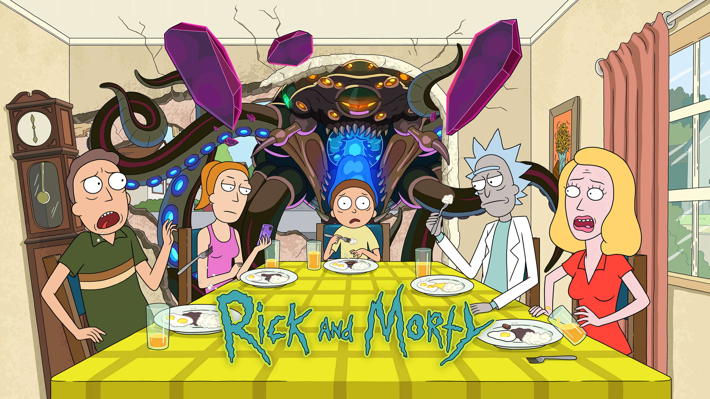

Después de haber estado desaparecido durante casi 20 años, Rick
Sánchez llega de imprevisto a la puerta de la casa de su hija Beth y
se va a vivir con ella y su familia utilizando el garaje como su
laboratorio personal.
Rick Sánchez es un ejemplo del típico "científico loco". Es un genio,
pero es irresponsable, alcohólico, egoísta, un poco depresivo y con
poca cordura. Rick por diferentes razones termina mudándose a la casa
de su hija Beth y en ese momento se encuentra con su nieto Morty; un
chico de 14 años de edad, tímido y no muy listo. Al juntarse con su
nieto, Rick y Morty viven una variedad de aventuras a lo largo del
cosmos y universos paralelos. Y es mediante tantas vivencias y
reflexiones que Rick busca que su nieto Morty no acabe como su padre,
Jerry, un hombre muy poco exitoso que a pesar de tener buenas
intenciones resulta ser bastante inútil en muchas ocasiones y depende
mucho de su esposa, Beth, hija de Rick. A pesar de estar muy apegados,
Rick y su nieto experimentan momentos en los que Summer, hermana de
Morty, se une en ocasiones a las pintorescas aventuras provocadas por
Rick.